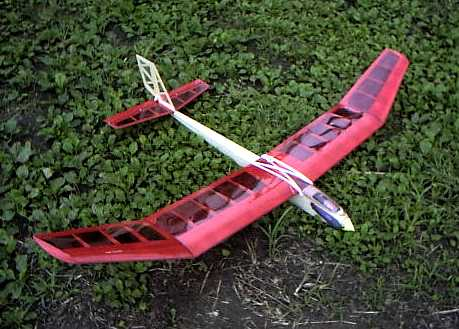

飛行日誌
モグラ400 ＱＲＰ

| 全長 | 865mm |
| 全幅 | 1400mm |
| 全備重量 | 465g （カタログ値：480 ～ 530g） |
| 生地重量 | 胴体 39g、水垂尾翼 11g、主翼 60g、計110g |
| フィルム貼後 | 胴体 45g、水垂尾翼 13g、主翼 82g、計140g |
| 動力・機材重量 | 325g |
| 主翼面積 | 22.0 dm2 |
| 翼面荷重 | 21.1g/dm2 （カタログ値：21.8 ～ 24.1g/dm2） |
| 主翼翼型 | 7.6 % 厚 QRPオリジナル |
| モ－タ－ | QRP HYPER 400/35T-RV |
| ギヤユニット | QRP 400BB ギヤダウン・ユニット |
| ギヤ比 | 2.25:1 （標準仕様） |
| プロペラ | CAM 9×5 折りペラ |
| バッテリ－ | 7N-500AR, 8.4V Ni-Cd (SANYO) |
| サ－ボ | Futaba S3103 (9.5g)×２、エレベーター・ラダー |
| 受信機 | Futaba R114F (10.9g) |
| アンプ | SKYLINE 22 (Max 22A) |
購入のきっかけ
エンジン機であるプレイリーもかなり低速での飛行ができる機体なのであるが、なにぶん大きいし、サブマフラーを付けてもある程度は音が出てしまう。電動機を始めるからには静かでゆっくり飛ぶ機体が欲しいなと思い、インターネットで情報を集め出した。すると、QRPのホームページに行き当たり、その中でもモグラ（モーターグライダー）400という機体に惹かれた。スラリとした胴体、短い機首、黒光りするキャノピーなど、洗練されたデザインである。
今度はモグラ400というキーワードでネット上を検索してみると、いろいろなオーナーの方々の評判が載っており、かなり良い評価を受けている機体であることが分かった。電動機で静かにゆっくり飛ぶというと、ムサシノ模型飛行機研究所のＥプレイリーかパストラル、あるいは同じQRPのEPカブなども候補に上がるのだが、住んでいるところが山間部なので、上達した暁にはスロープソアリングも楽しみたいと欲張って、電動モーターグライダーを選んだ次第。パストラルにもかな～り惹かれたのだが、ちょと大きめなのと、540クラスの機体と言うことで、全備重量が重めなのにやや気が引けてしまった。
キットを見て
あっさりとした白箱に、あっさりとしたラベルが貼られたシンプルな外見のキットであるが、内容は充実している。400クラス逆転モーター、高精度の１段減速ギヤユニット、スピンナー、コンデンサーセット、リンケージロッド、ジョイント、ホーンなど小物一式、受信機固定用のプラ板までが含まれている。定価15,000円（実売価格12,000円程度）はちょと高いかなという気がしないでもないが、精度の良いバルサ・ベニヤ材の加工と詳しい製作マニュアルが付いていることを思えば妥当なところであろうか。
製作マニュアル・設計図を見て
「製作にあたっては本マニュアルをご一読の上、作業に入って下さい」と書かれているが、一読するのにちょっと気合いを入れたくなるほど詳細に書かれている。さらに、QRPのホームページにも、補足的にいろいろな情報が載っているので、このマニュアルとネット環境があれば、初心者の方でもさほど苦労はせずに組み立てられると思う。
主翼・尾翼を除き、胴体部分の原寸大の設計図は無く、約40%縮小の図面があるのみであるが、部品の精度が高いので、組立には支障は無い。とはいうものの、大きな図面を机の上に広げて、製作に取りかかる前にああだこうだと想いを巡らせる楽しみはチョト少ないか。
尾翼の組立
いつものように、ウォームアップを兼ねて尾翼の組立から始める。マニュアル通りに組めばほとんど問題なく仕上がる。水平尾翼の前縁材H4と後縁材H1に、補強材H5/H6の入る穴がカットされている上に、その精度が良くピッタリはまることに感動する。指定では瞬間接着剤を使うのだが、より軽く仕上がると言われているセメダインＣ（ボンドＫ）を用いた。
水平・垂直尾翼ともにラダーの形状が末広がりというか、後ろになるほど幅が広くなっているので、前衛的でかっこいいなと思いつつ、オールドスタイルが好きな私はちょこっと変更して、無難な、何の変哲もない形で仕上げた。このあたりは、ちょっとしたデザインで、機体の印象がけっこう変わるので面白いところである。そんなに大した違いは無いのだろうけれど、翼端部が末広がりになっているのは抵抗が増えるのでは？とも思う。もし墜落して胴体をスクラッチで作り直す羽目になったら、思い切ってＴ尾翼にしてみようか。
ヒンジテープを買い忘れたので、ピンバイスで穴を開け、ムサシノ方式の絹糸縛りヒンジでラダーを付けた。糸の締め付けが緩いとキチッとした作動が出ないので、穴に少量瞬間接着剤を垂らして糸を固定した。
主翼の組立
スカイカンガルーを作った時には、主翼の構造はほとんど昔作ったプレイリーと同様だったので何の問題もなかったが、今度は初めてのQRP機であるし、翼端部は後退角が付いていたり上半角が２段になっていたりするので少し緊張しながら組み始めた。しかし、親切なマニュアルのおかげでさほど苦労はしなかった。調子に乗って右翼を２つ作りかけたが、すんでのところで気が付いて良かった。（笑）
ちょっと難しかったのは、上面プランク材W1の前縁裏面を、下面プランク材と合わさるように角度を付けて整形するところ。これも丁寧に作業すれば問題は無いのであるが、一番面白くて乗っているところだったので慌ててしまった。用心用心。
主翼中央部と翼端部との接点となるリブW4には、あらかじめ角度が付けて整形されているので、向きを注意して使用する材料を間違わなければ非常に楽に組むことが出来る。初心者にはうれしいポイントである。が、中央部のリブW3にはその加工がなされていない。なぜだろうか？W4よりも傾きが緩いからか？ こっちにも角度が付けられているとウレシイのだが。机の上に定板を置き、定板の端からわずかにW3を出して押さえ、サンディングブロックをGAGEで指示された所定の傾きに保持しながら慎重に接続面を整形した。
翼端部のネジリ下げ加工は、カイモノを使ってプランクするのが面倒だったので、フィルム張り時にネジリながらアイロンがけする方法で行った。
主翼各部の接合は、説明書通りで問題なく仕上がった。主翼中央部のマイクログラスによる補強には、90分硬化型のエポキシ接着剤を用いた。２液を混合した後でドライヤーで加熱すると流動性が高まるので楽に塗布することができるようになる。さらに、塗布したエポキシ接着剤の上にマイクログラスを置いてからドライヤーの熱風を当てると再び液が流動化し、グラス繊維の表面まで接着剤が浸み渡る。仕上げはポリエチレンの手袋をはめて凸凹を均しておく。
指定では、ほとんどの組立に低粘度の瞬間接着剤を使うのだが、尾翼同様少しでも軽くと思い、セメダインＣを用いた。ま、気分（と財布）の問題ですが。
胴体の組立
基本的にマニュアル通りに組めば問題は無いが、ちょっと気を付けると後でかなり楽になる点を一つ。行程２において、部品F7,8,9を組むのであるが、組む前にF7とF9の右下にアンテナ線を通す穴を径5mmほどの大きさで開けておくこと。指定では径2mmとなっているが、これはアンテナ線と、それを保持して引っ張る役目のピアノ線が通るギリギリの大きさしかないので、大きめの穴を開けておけば後の作業が非常に楽になります。また、部品F9の上部には、左右にリンケージロッドのチューブが通る溝があらかじめ開けてありますが、この溝の幅も２倍程度に広げておいた方が後で楽に作業ができるでしょう。
それにしても、各部品の精度には驚かされる。F7～9あたりは、ほとんど接着剤が要らないのでは？と思うほどに合いが良いのである。
RC装置の搭載とリンケージ
機体の製作がサクサクと出来たわりに、リンケージで手間取ってしまった。中でもロッドチューブとアンテナ線を胴体に通すことが大仕事でした。（なんだかんだで１時間以上を要してした） ぜひ前述のように大きめの穴を各所に開けておいて下さい。ロッドチューブは、マニュアル指定のように胴体後部から入れてF9のロッド穴に通すよりも、F9のロッド穴から差し込んで、余った0.8mmロッドを加工して作ったL字型の引っかけ棒を使い、胴体後部の穴から掻き出した方が簡単だと思います。
また、工程２－・において、リンケージの0.8mmロッドを適当な長さに切断する際には、くれぐれも慎重に切って下さい。縮めすぎるとジョイントやホーンによる調整ではどうしようもなくなり、新たに0.8mmピアノ線を購入してロッドを自作する羽目になります。（経験者は語る）
あ、今マニュアルを読み直したら、クランクロッドと径0.8mmロッドは、ロッドジョイントの中で重ねられるようになっていますね。これなら無理してギリギリの長さで切らなくても良いわけだ。ああ、これに早く気づいていれば.....（泣）
エレベーター・ラダーのニュートラル出しには、受信機とサーボを動かす必要があるので、リンケージにかかる前に、バッテリーを一本充電しておくと段取りが良くなります。
工程２－・では、ロッドチューブを瞬間及びエポキシ接着剤で固定するように指定されていますが、後々取り外したくなるような事態（墜落大破による胴体部分の作り直し......）に備えて、ごく少量の瞬間接着剤で固定するだけに止めておきました。
重心位置の調整
私の場合、受信機 Futaba R114F（10.9g）、サーボ Futaba S3103×2ヶ（19g）、バッテリー QRP 8.4V 500AR（約140g）をマニュアル通りの位置に乗せたところ、かなり機首が重くなり、14gほどのオモリをテールに積んでようやく指定の重心位置となりました。
数回の飛行後、気を使って軽く作ったにもかかわらず、テールにでかい鉛が付いているのを無念に感じ、部品F7とF8を加工し、サーボ２ヶとバッテリーの位置を約20mm後ろにずらし、受信機もF7に当たるまでいっぱい後ろ寄りに積み直しました。が、それでもノーズヘビーは解消されず、結局5gほどのオモリを、側板最後部と部品F6を切り欠いた位置に積むことになりました。
工作に自信のある方は、上記の機材を使う場合、部品F7,8,9及びバッテリー受け部品F16などの取り付け位置を3.5～4cmほど後ろにずらして組み上げて調整すると、オモリを付けずに重心位置を合わせることができると思います。ま、飛行性能にはほとんど影響しないと思いますが。気分の問題ですね。
私の機体では、バッテリーを含めた飛行重量は465gとなりました。
フライト・インプレッション
初飛行は2003年6月14日。RFCの諸先輩の中でも腕が立つと言われ、手持ちの機体はどれも綺麗なＴさんの操縦で河川敷の上空へ舞い上がった。フルスロットルでは、40度くらいの急角度で失速することなくぐんぐんと駆け登っていく。自分の作ってきた機体が本当に飛んでいるかと思うと感動もひとしおである。
かなり上空へ上げてから、Ｔさんがプロポを渡してくれた。これまで習ったことを思い出し、慎重に旋回する。じんわりとしたラダー打ち、エレベーターアップを少々、ラダーを戻して旋回終わりのちょっと前でラダーの当て舵。エンジン機のプレイリーよりもさらにゆっくりとした速度で上空を旋回している。
「これは良い練習機だね」
背後から、常連の誰かが声をかけてくれる。ところが振り返る余裕はない。高度が落ちるのが怖いので、中途半端にモーターを回しながら旋回を繰り返していると、ふいに高度が下がり始めた。
「あ！ Ｔさん！ 電池切れましたァ！」
いきなり呼ばれたＴさんが慌ててプロポ受け取って操縦を代わって機体を立て直すと、ラダーの打ちすぎで切れ込みながら落下を続けていた機体は川原にぼうぼうと生えた草むらに一瞬隠れるくらいまで落ちてから姿を現し、なんとか滑空して河川敷まで戻ってきた。
心臓に悪いほどびっくりさせてしまったＴさん、ギャラリーの諸先輩方、どうもすみませんでした。以後、気を付けます。
上昇性能が良いこの機体は、思い切ってフルスロットルのモーターランで高度を稼ぎ、滑空を楽しみつつ飛ばし、高度が下がったら再びモーターランという飛ばし方が効率が良いようです。（モーターグライダーの常道か？）
2003年6月某日、週末まで我慢しきれず裏山で飛ばす。予定では20m×20mほどのお茶畑に着陸させるはずだったが、谷間に吹いていた想像以上の西風に流され、旋回させようとラダーを切り続けるといきなり切れ込んで高度を失い電柱に接触。ゴム止めが外れ、主翼と胴体とが平行して落下。主翼は無事だったが水平尾翼が大破。図面を見ながらスクラッチで復元。
満足に飛ばせるようになるまでは、ムチャをするものではないと反省。２軒向こうの隣家に突っ込まなくてよかった。
2003年7月5日には、梅雨の合間の日差しで発生したサーマルを初めて捉え、15分近いソアリングを楽しみました。いやぁ、上昇気流に乗っていつまでも降りてこない機体を見ると感動しますね。ちょっと首が痛くなりましたけど。
2003年7月12日、充電し終えたばかりのニッカドバッテリーと機体を持って裏の畑に行って飛ばす。なにも考えずにスロットルを全開にすると大きく縦の旋回に入り、あれよあれよと思う間に裏山の杉の木の梢に突入してしまった。充電直後のバッテリーが思いのほかパンチがあったのと、無造作なスロットル操作がまずかった。
動揺しつつも、家からアルミの梯子を担いできて、杉の木によじ登り、大汗をかきつつ回収する。サルベージならぬサゲベージである。
本日の教訓：スロットル操作は丁寧に！
Wingtips 目次へ
サイトマップ
ホームへ
お問い合わせ